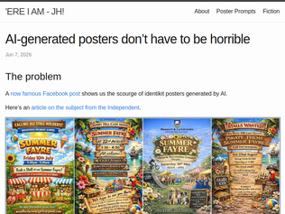
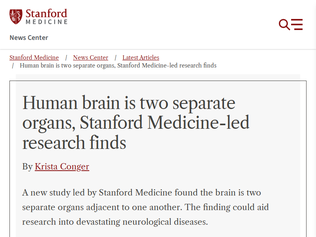
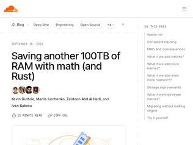
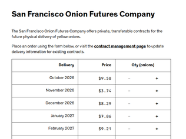
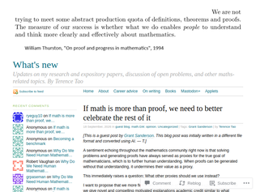

"A lot of people in the comments say that the supposedly better examples in the article are still “horrible” because they can tell they’re AI and point to things that the AI did “wrong” and a human artist would do better.That may be true if you’re working with a top of the line artist, but in my experience the average freelance designer online is significantly worse than AI. I’ve worked with dozens of budget friendly designers on Fiverr and consistently get way worse results than I’ve gotten from AI models. Will a great human designer produce better output than an AI? Maybe, but a small local event or business probably won’t have the budget to hire them or know where to find them. It’s cheaper, faster and easier to use AI to generate something that’s good enough for their purposes.People also point out all the little flaws in the “good” examples and cite them as obvious tells that they were AI generated. I think it would be interesting to see if people could reliably distinguish between AI generated flyers and human made flyers. Sure, sometimes it’s obvious like when the AI adds those weird, cartoony people. But if the model is told not to create designs like that and stick to the styles used in the second half of the article, I expect people would have a much harder time distinguishing the human designs from the AI designs."
"I find it kinda funny that even "smartest", most capable models often have a very hard time going beyond surface-level, top-of-mind associations, when faced with creative tasks.Of course, a "Japanese Minimal Poster" has a sakura and a stylized flag of Japan, duhA human designer would probably think that "Japan -> sakura" and "Japan -> Japanese flag" are way too obvious, too banal, too stereotypical, and, most importantly too boring. And then they would probably sit for a while and try to think of something fresher and less clichéd.But AI has absolutely no problem with going with the cheesiest, most overused trope."
"It’s not complicated - the default style signals low effort. Why should I get excited about the village fete if the organizers put in the barest minimum of effort?But there’s another reason it drives people crazy - it’s low effort trying to present as high effort. If the sign was simple Comic Sans then it would at least be charmingly honest."
"It’s a tale as old as time — people don’t understand that marketing and branding are just as important, if not more so, than the product. Jev is exceptionally-well branded. Anyone can look at the webpage and understand it, and the implications, instantly.OPs “marketing” is a single post on Reddit titled “ Predicting sales conversion probability from conversations using pure Reinforcement Learning”. Can you understand what that means? I can’t, and I consider myself reasonably technical. Is it obvious it has the same implications as Jev? Again, no idea. And it was just a single post on a subreddit that I don’t even browse! I see people on this thread saying “Jev is just BERT”. Sure, and Dropbox is just a ftp account mounted with curlftpfs!I do feel bad for the author for finding something cool and being unable to brand it. But the full definition of “product” INCLUDES being able to coherently communicate it. In some sense the branding is just as much the “breakthrough” as the model."
"I think the main gripe that people had with Jev and Typesafe was the language used when they launched. To me personally it seemed like a parody/con/shady at first."Breakthrough", "our research went in another direction" , "Two years in stealth", "System One thinking model", "Jev can't hallucinate", "RLCD","We are doing very cool stuff, but we will have to hire you to tell you", - these are some of the things that they said on their website on the launch blog.I had used versions of bert to achieve the same functionality years ago. But to me it seems like they were able to trick the VCs with "can't hallucinate" etc.To the above author, kudos for sharing your work and making it open. Something like this shouldn't be closed in the first place when it has been available for so many years"
"I played around with Jev last night and did it for classification tasks that I used Gemini 2.5 flash lite with.It’s a bit faster and bit cheaper, but this is compared to LLM. The consistency was nice to see, BUT, as someone who trained NLP models prior to LLMs, it’s just BERT with more data. I can see why people would want ready made one shot classifier, and I can see the value of sending multiple classifier in one call, but I wouldn’t call it breakthrough. And I believe many labs will replicate it in no time and might have it as part of their harness.I see it as a wake up call for the tech community to go back to basics for most tasks instead of relying solely on generic LLMs."

"The really exciting thing in this article is that this research led them to a new technique for growing brain stem cells in vitro, which has been very difficult until now. If that isn't being oversold, it's big news. That's going to make future research into diseases like ALS a lot easier."
"The actual research says something far less clickworthy. Are Stanford's PR dribbles now created by LLMs ?"Two parallel neural ectoderm progenitors contribute to the developing brainAbstract When and how different brain regions diversify from one another remains unresolved.Does a common neural ectoderm progenitor generate the entire brain? Or do multiple neural ectoderm progenitors exist, each restricted to form specific brain regions?Here our lineage tracing studies of mouse embryos support the latter model. Two parallel brain progenitors emerge simultaneously during gastrulation: anterior neural ectoderm (forebrain/midbrain progenitor) and posterior neural ectoderm (hindbrain progenitor). Differentiation of human pluripotent stem cells into anterior or posterior neural ectoderm-like cells revealed these were lineage committed to forebrain/midbrain versus hindbrain fates, respectively. They harbored diverging chromatin landscapes foreshadowing future forebrain/midbrain versus hindbrain identities. We further differentiated human pluripotent stem cells into hindbrain rhombomere 5/6-specific motor neurons, which were hitherto difficult to generate in vitro.Hence, we postulate the brain is a composite organ emanating from two lineage-restricted progenitors; these dual progenitors may be evolutionarily conserved across 550 million years from hemichordates to mammals.""
"bioRxiv preprint July 2025 [0]The copyright holder for this preprint is the author/funder, who has granted bioRxiv a license to display the preprint in perpetuity. It is made available under a CC-BY 4.0 International license.[0] https://www.biorxiv.org/content/10.1101/2025.07.02.662771v2PDF is free to download."

"Incredibly happy to see this series of CF articles. I was always so proud of devs back in the days where RAM and processing were scarce and who had to get creative to fit even the most basic stuff in the budget. It seemed to me that after RAM and processing became abundant, most gave up on optimization and focused on shipping instead which meant now that even with several cores, a basic notepad or music player failed to work. In a way, RAM becoming more expensive has ushered in a new era of forced optimizations, which I'm really happy for"
"Do I understand correctly, that they spent memory storing largish N hash values per server, so that request hash determines which server to send request to using closest higher value of all server hashes?That in effect boils down to consistently selecting server S with probability P, where P is function of weight and total number of servers?Surely there must be better way to select server with a given probability without storing a massive lookup table of hashes? Randevouz hashing of some sorts"
"I would get rid of consistent hashing and ketama for a better system which works save an additional 600TiB.You use the first N bits of your key hash to pick the server partition so it’s a reasonable number (eg 128 servers per partition). Then use high quality precomputed hashes (first 64 bits of sha256) for the server name as N in H(K + N). Use wymum from wyhash as the H so that you do o(n) integer multiplications while retaining a result that’s still a good hash statistically.Now you’re using a tournament hash, the small N means O(N) vs O(N log N) doesn’t matter, and also this O(N) is also going to be much less CPU than computing 160 hashes per key as they do now, so much less latency added per request."

"For those who don’t know:https://en.wikipedia.org/wiki/Onion_Futures_Act(which also banned box office receipt futures)A fun thing is to go on FRED and make a graph with prices from onions and, say, corn to see the differences in volatility."
"> FAQ>Is this legal?>Yes, to the best of our knowledge. 7 U.S. Code § 13-1 prohibits "contract[s] for the sale of [...] onions for future delivery [...] on or subject to the rules of any board of trade in the United States." The San Francisco Onion Futures Company is not a board of trade, defined as an "organized exchange or other trading facility". We sell contracts privately to individual buyers, and do not operate any exchange or secondary market.Performance art against that law?Also November onions are an absolute steal compared to the adjacent months!"
"Since this may be a legal gray area, they should host it on a Tor onion site."
"Agents just eat these things. After last week's HN post about Cyphral Distich, I pointed Astra and Fable at some unsolved ciphers just to see whether some joker who knew nothing about the field could get the same results, and sure enough there's plenty of low hanging fruit.https://aaymeloglu.github.io/unsolved-ciphers/But I got nothing on Daniel Bordeau, who in the past week seems to have built himself a whole code breaking factory!https://dbourdeau.github.io/cyphersolver/index.html"
"Using an existing published key, which people hadn’t tried because the message was sent before the key was supposed to be used.This headline is misleading."
"Can the ships logs be found on the internet? If so, the model could've manufactured a fake key and corresponding message. I think this is unlikely but should probably still be considered."

"I’m reminded of that famous debate between Poincaré and Hilbert at the International Congress of Mathematicians in Paris in 1900. It was then that everyone decided to follow Hilbert’s path, and proof came to be valued more than intuition. I think modern math at school and at applied university kind of lost this intuitive part.I try to teach my students that mathematics is, first and foremost, a very precise language of communication. It’s sometimes amusing to ask those who don’t like math to do without it entirely, just to see how much harder it becomes to describe the things around them.Second thing I tell them, formulas are the essence of mechanisms in their purest form. And in this form, they’re much easier to grasp and mentally manipulate. It always amused me, after taking a mechanics course, to imagine that for any formula, you could visualize a mechanism or process that implements it.And third thing, I suppose, the ability to verify one’s own statements as proof. Although, of course, mathematicians would probably tear me apart here for my heresy:sorry, I’m not a mathematician, but an engineer. You can make mistakes by using incorrect assumptions, but at some point, analysis itself will show you that you were mistaken. There’s a wonderful book, How to Prove It by Daniel Velleman, which provides an introduction to proof for the uninitiated like me. I really enjoyed it."
"I posted nine days ago in another thread:As much as I hate it, I don't think we'll ever get a proof of the four color theorem that isn't enumerating cases.When you have an integral or the sum of an infinite series that comes out to pi, you know there must be some satisfying explanation involving a circle.Contrast with "Examples of patterns that eventually fail" on math stackexchange[^1]. When a pattern ends at 906150257, you don't really expect the proof for that to be something beautiful. The reason for the exact value of an upper bound is that it isn't smaller and it isn't bigger.There's a relationship between e, i, pi, and -1 comes from a deeper relationship between complex numbers and rotation.The relationship between planar graphs, vertex coloring, and 4 might just be because we put planar graphs and vertex coloring in the same room and 4 popped out, instead of 3 or 5.[^1]: https://math.stackexchange.com/a/111461"
"The math field is confronting something that coders have been dealing with for a few years now, only far more violently. Today's moat for software seems to be that AI can automate tasks but not a full job (yet). But for a large proportion of mathematicians, doing these tasks really was _the_ job. It's the bit they wanted to do, and if they completed a sufficiently difficult set of tasks, they got tenure. Now this model is failing, they frantically need to pivot the role of humans to save their profession from funding cuts.I remember when "writing code was never the point" became a mantra here. There was truth in it, but removing the coding has certainly taken away a lot of the texture of the work and enjoyment of the craft. Many of us feel this loss as we tech-lead teams of agents as our source of income. I am not optimistic the mathematics pivot is going to work, but I'm certain that most will be depressed with the outcome even if they succeed.We are all staring at the same existential dread, just seeing it unfold slower. We're being told that utopia is to be obsolete, and that is a jarring idea to contend with."
"You can just do what my university did, hire a small shell firm with 3 employees to hold all your data, and when it got hacked they just went bankrupt and we switched to a new shell firm with similar form and function.Minimizes money usage and does not require any security investments"
"Wow! :O Finally, a legislator with enough balls to put up something that _might_ (just might) make corporations _actually_ care about security and privacy! I can't wait for this to start being adopted in other countries. It's about time!"
""through intent or gross negligence"I'm not familiar with Korean law but that seems a rather high bar. I don't think we'll see many fines actually levied."
"z.ai made a statement, screenshotted in this article: https://finance.sina.com.cn/tech/roll/2026-09-18/doc-inisfye...claude translation:Dear ZCode users,We take today's community discussion very seriously. We carried out an internal review right away, and we first want to apologize to the affected users. Here is an explanation of what happened:The issue stems from ZCode's "codebase indexing" feature. This feature is meant to help users generate a repository index locally, which supports session checkpoint restoration (including past versions), rolling back to past versions, and Repo Wiki, among other things.When the Repo Wiki feature generates Wiki pages, it may trigger an upload of repository data. After the Wiki pages are generated in the cloud, the uploaded data is destroyed immediately and is not stored. Because this feature was enabled by default in its early launch period, some users were affected. We sincerely apologize for this. The issue has now been fixed.We understand that any data-related issue directly affects users' trust in a product. We will open-source the ZCode codebase in the near future so we can improve the product within a more open ecosystem. We will also invite third-party evaluators to review how the system operates, and we'll keep publishing updates on the review, building your trust with full transparency.We deeply apologize for the trouble this has caused. As compensation, all ZCode users will receive one extra weekly quota reset, which will be issued today.Thank you again for your attention and oversight."
"Is it naive to assume that the agent will try and access anything on your disk, either accidentally or maliciously?Permissions classifiers in auto mode are just models trying to guess if they're doing the right thing.Claude Code will tell you that it went around a sandbox because the sandbox blocked it. At which point, you ask yourself the point of the sandbox."
"While we're on this, I find it really really weird how windows defender insists on sending my codex work files for analysis all the time (which I block in automatic permissions so it has to ask me in a notification). I don't think i've seen it ask to upload more than one or two things, and it doesn't do it with other AI app I use (eg Claude Code) but they really want to see what's inside my codex files.It's easy to trigger, I just need to go inside Codex settings and change something, it saves and instantly windows defender who never wants anything want to "you may be at risk, let me upload that for analysis yes/no"."
"> The problem is that vibe coding makes it possible to build a substantial solution before learning enough about the problem to recognise that a much better solution exists.This example and Bend aside, I find this to be the biggest struggle with the perceived intelligence we have today. It's great at producing something that works, but it is not great at calling you out when you don't know what you don't know.It's not able to educate and course correct you unless you have great self awareness and discipline.That said, I think this goes for everything, it's easy to fall into this trap because it is very human. We simply don't know what we don't know, so it's not uncommon to revisit an old solution only to be enlightened that there is now new information that allows you to replace it with something much better.I don't think anything here is new or changed, if anything changed is really just the rate that we experience this. LLMs make it easier and faster for the feedback cycle to happen.Now back to Bend, I think putting your work out there and being unapologetic about it, open source even, and willing to take feedback, will go a long way.I am more worried about the many closed source implementations of LLM built products that are being sold and people are depending upon that don't get this great criticism from many different thinking heads."
"The original discussion about the project (https://news.ycombinator.com/item?id=49746163) is very weird. Lots of call-outs about how the author is some sort of celebrity and random accounts vouching for him, with little discussion on the substance.Not even the demo on that release works well."
"> The field in question is formal verification. It’s notable that those two words appear nowhere on Bend’s webpage or in its codebase. The developer has built an entire language around a field seemingly without realising that said field exists.I checked the developer's X account, they have written numerous posts about formal verification, so this specific claim ("without realising that said field exists") seems to be false."
AI-generated posters don’t have to be horrible
"A lot of people in the comments say that the supposedly better examples in the article are still “horrible” because they can tell they’re AI and point to things that the AI did “wrong” and a human artist would do better.That may be true if you’re working with a top of the line artist, but in my experience the average freelance designer online is significantly worse than AI. I’ve worked with dozens of budget friendly designers on Fiverr and consistently get way worse results than I’ve gotten from AI models. Will a great human designer produce better output than an AI? Maybe, but a small local event or business probably won’t have the budget to hire them or know where to find them. It’s cheaper, faster and easier to use AI to generate something that’s good enough for their purposes.People also point out all the little flaws in the “good” examples and cite them as obvious tells that they were AI generated. I think it would be interesting to see if people could reliably distinguish between AI generated flyers and human made flyers. Sure, sometimes it’s obvious like when the AI adds those weird, cartoony people. But if the model is told not to create designs like that and stick to the styles used in the second half of the article, I expect people would have a much harder time distinguishing the human designs from the AI designs."
"I find it kinda funny that even "smartest", most capable models often have a very hard time going beyond surface-level, top-of-mind associations, when faced with creative tasks.Of course, a "Japanese Minimal Poster" has a sakura and a stylized flag of Japan, duhA human designer would probably think that "Japan -> sakura" and "Japan -> Japanese flag" are way too obvious, too banal, too stereotypical, and, most importantly too boring. And then they would probably sit for a while and try to think of something fresher and less clichéd.But AI has absolutely no problem with going with the cheesiest, most overused trope."
"It’s not complicated - the default style signals low effort. Why should I get excited about the village fete if the organizers put in the barest minimum of effort?But there’s another reason it drives people crazy - it’s low effort trying to present as high effort. If the sign was simple Comic Sans then it would at least be charmingly honest."